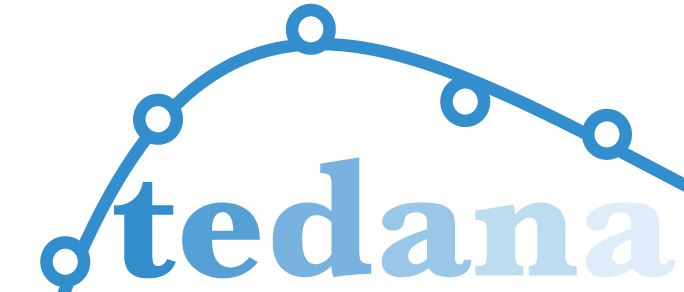
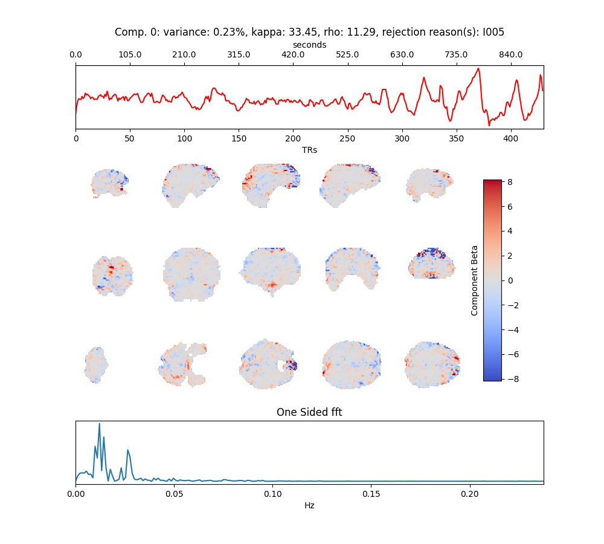
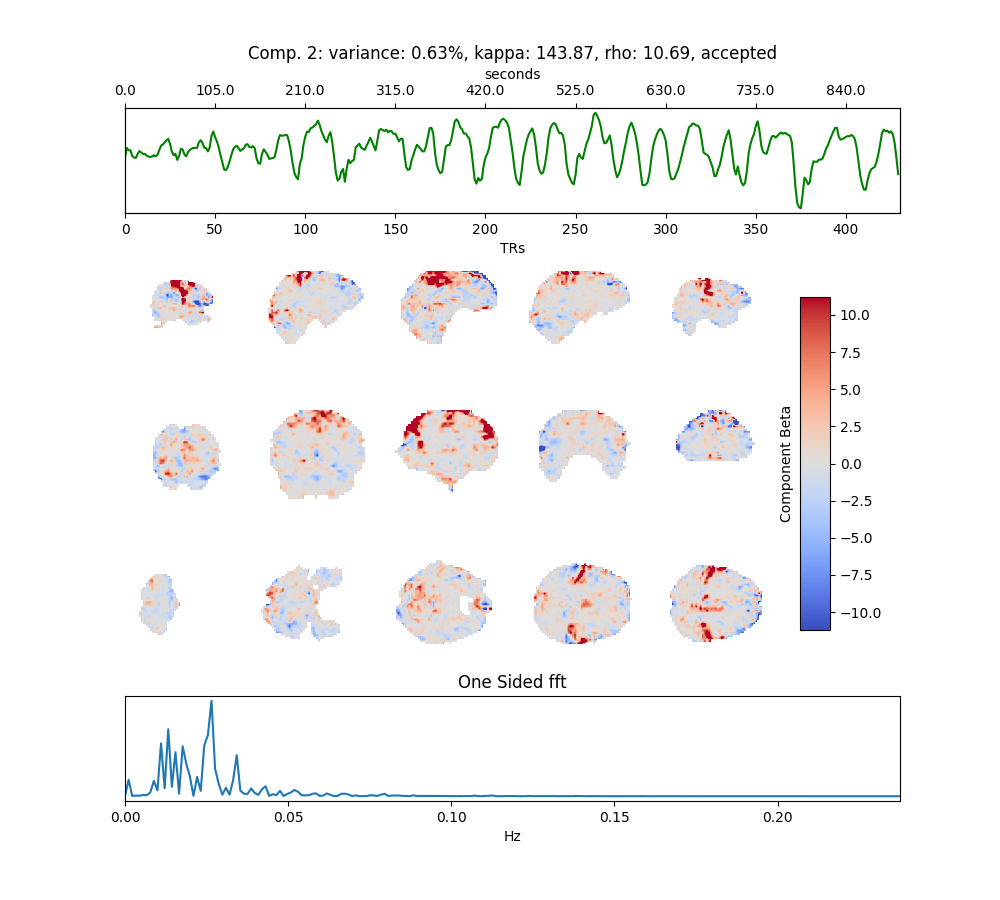

Tedana

Intro
TE-dependent analysis (tedana) is a Python library for denoising multi-echo functional magnetic resonance imaging (fMRI) data. tedana originally came about as a part of the ME-ICA pipeline, although it has since diverged. An important distinction is that while the ME-ICA pipeline originally performed both pre-processing and TE-dependent analysis of multi-echo fMRI data, tedana now assumes that you’re working with data which has been previously preprocessed.
Documentation
Install
Dependencies
there is a lot you’ll want installed before starting
- docker
- miniconda
- git
- jq
- dcm2niix
- freesurfer (with license)
- FastSurfer (if you want to speed things up)
- a bunch of python scripts installed in a virtual environment (see below)
- bids-validator
- ANTs
With miniconda3 installed, you should consider using a virtual environment. Here is an example of how to create, start/activate, then install some python libraries
conda create -n tedana python=3 pip mdp numpy scikit-learn scipy
conda activate tedana
pip install nilearn nibabel
pip install tedana
pip install dcm2bids # if not already installed
pip install fmriprep-docker # if not already installedOverview of steps:

For preprocessing with fmriprep see our example analysis in multi-echo fMRI
Run
After running the preprocessing:
get echo times:
subid=Pilot02
echo1=$(cat sub-${subid}/func/sub-${subid}_task-rest_echo-1_bold.json | jq -r '.EchoTime')
echo2=$(cat sub-${subid}/func/sub-${subid}_task-rest_echo-2_bold.json | jq -r '.EchoTime')
echo3=$(cat sub-${subid}/func/sub-${subid}_task-rest_echo-3_bold.json | jq -r '.EchoTime')then:
tedana -d derivatives/fmriprep/sub-${subid}/func/sub-${subid}_task-rest_echo-1_desc-preproc_bold.nii.gz derivatives/fmriprep/sub-${subid}/func/sub-${subid}_task-rest_echo-2_desc-preproc_bold.nii.gz derivatives/fmriprep/sub-${subid}/func/sub-${subid}_task-rest_echo-3_desc-preproc_bold.nii.gz -e $echo1 $echo2 $echo3 --out-dir derivatives/tedana/sub-${subid} --debugTakes 2 mins
Results
Your derivatives folder should now contain the following directories:
.
├── FastSurfer
│ ├── fsaverage
│ │ ├── label
│ │ ├── mri
│ │ │ ├── orig
│ │ │ └── transforms
│ │ │ └── bak
│ │ ├── mri.2mm
│ │ ├── scripts
│ │ ├── surf
│ │ └── xhemi
│ │ ├── bem
│ │ ├── label
│ │ ├── mri
│ │ │ ├── orig
│ │ │ └── transforms
│ │ │ └── bak
│ │ ├── scripts
│ │ ├── src
│ │ ├── stats
│ │ ├── surf
│ │ ├── tmp
│ │ ├── touch
│ │ └── trash
│ └── sub-Pilot02
│ ├── label
│ ├── mri
│ │ ├── orig
│ │ ├── tmp
│ │ └── transforms
│ │ └── bak
│ ├── scripts
│ ├── stats
│ ├── surf
│ ├── tmp
│ ├── touch
│ └── trash
├── fmriprep
│ ├── logs
│ └── sub-Pilot02
│ ├── anat
│ ├── figures
│ ├── fmap
│ ├── func
│ └── log
└── tedana
└── sub-Pilot02
└── figuresFastSurfer
Inside FastSurfer the files your probably interested in are in the mri folder
.
├── antsdn.brain.mgz
├── aparc.a2009s+aseg.mgz
├── aparc+aseg.mgz -> aparc.DKTatlas+aseg.mapped.mgz
├── aparc.DKTatlas+aseg.deep.mgz
├── aparc.DKTatlas+aseg.deep.withCC.mgz
├── aparc.DKTatlas+aseg.mapped.mgz
├── aparc.DKTatlas+aseg.mgz -> aparc.DKTatlas+aseg.mapped.mgz
├── aparc.DKTatlas+aseg.orig.mgz
├── aseg.auto.mgz
├── aseg.auto_noCCseg.mgz
├── aseg.mgz
├── aseg.presurf.hypos.mgz
├── aseg.presurf.mgz
├── brain.finalsurfs.mgz
├── brainmask.auto.mgz
├── brainmask.mgz
├── brain.mgz
├── filled.auto.mgz
├── filled.mgz
├── filled-pretess127.mgz
├── filled-pretess255.mgz
├── lh.ribbon.mgz
├── lh.surface.defects.mgz
├── mask.mgz
├── norm.mgz
├── nu.mgz
├── orig
│ └── 001.mgz
├── orig.mgz
├── orig_nu.mgz
├── rawavg.mgz -> orig.mgz
├── rh.ribbon.mgz
├── rh.surface.defects.mgz
├── ribbon.mgz
├── segment.dat
├── T1.mgz
├── talairach.label_intensities.txt
├── tmp
├── transforms
│ ├── bak
│ ├── cc_up.lta
│ ├── talairach.auto.xfm
│ ├── talairach.auto.xfm.lta
│ ├── talairach_avi.log
│ ├── talairach.lta -> talairach.xfm.lta
│ ├── talairach.m3z
│ ├── talairach_with_skull.lta -> talairach.xfm.lta
│ ├── talairach.xfm
│ ├── talairach.xfm.lta
│ └── talsrcimg_to_711-2C_as_mni_average_305_t4_vox2vox.txt
├── wm.asegedit.mgz
├── wm.mgz
├── wmparc.DKTatlas.mapped.mgz
├── wmparc.mgz -> wmparc.DKTatlas.mapped.mgz
└── wm.seg.mgzAn overview of the output files can be found here. I highly recommend going through that tutorial.
fmriprep
fmriprep ouput:
.
├── dataset_description.json
├── desc-aparcaseg_dseg.tsv
├── desc-aseg_dseg.tsv
├── logs
│ ├── CITATION.bib
│ ├── CITATION.html
│ ├── CITATION.md
│ └── CITATION.tex
├── sub-Pilot02
│ ├── anat
│ │ ├── sub-Pilot02_desc-aparcaseg_dseg.nii.gz
│ │ ├── sub-Pilot02_desc-aseg_dseg.nii.gz
│ │ ├── sub-Pilot02_desc-brain_mask.json
│ │ ├── sub-Pilot02_desc-brain_mask.nii.gz
│ │ ├── sub-Pilot02_desc-preproc_T1w.json
│ │ ├── sub-Pilot02_desc-preproc_T1w.nii.gz
│ │ ├── sub-Pilot02_dseg.nii.gz
│ │ ├── sub-Pilot02_from-fsnative_to-T1w_mode-image_xfm.txt
│ │ ├── sub-Pilot02_from-MNI152NLin2009cAsym_to-T1w_mode-image_xfm.h5
│ │ ├── sub-Pilot02_from-MNI152NLin6Asym_to-T1w_mode-image_xfm.h5
│ │ ├── sub-Pilot02_from-T1w_to-fsnative_mode-image_xfm.txt
│ │ ├── sub-Pilot02_from-T1w_to-MNI152NLin2009cAsym_mode-image_xfm.h5
│ │ ├── sub-Pilot02_from-T1w_to-MNI152NLin6Asym_mode-image_xfm.h5
│ │ ├── sub-Pilot02_hemi-L_inflated.surf.gii
│ │ ├── sub-Pilot02_hemi-L_midthickness.surf.gii
│ │ ├── sub-Pilot02_hemi-L_pial.surf.gii
│ │ ├── sub-Pilot02_hemi-L_smoothwm.surf.gii
│ │ ├── sub-Pilot02_hemi-R_inflated.surf.gii
│ │ ├── sub-Pilot02_hemi-R_midthickness.surf.gii
│ │ ├── sub-Pilot02_hemi-R_pial.surf.gii
│ │ ├── sub-Pilot02_hemi-R_smoothwm.surf.gii
│ │ ├── sub-Pilot02_label-CSF_probseg.nii.gz
│ │ ├── sub-Pilot02_label-GM_probseg.nii.gz
│ │ ├── sub-Pilot02_label-WM_probseg.nii.gz
│ │ ├── sub-Pilot02_space-MNI152NLin2009cAsym_desc-brain_mask.json
│ │ ├── sub-Pilot02_space-MNI152NLin2009cAsym_desc-brain_mask.nii.gz
│ │ ├── sub-Pilot02_space-MNI152NLin2009cAsym_desc-preproc_T1w.json
│ │ ├── sub-Pilot02_space-MNI152NLin2009cAsym_desc-preproc_T1w.nii.gz
│ │ ├── sub-Pilot02_space-MNI152NLin2009cAsym_dseg.nii.gz
│ │ ├── sub-Pilot02_space-MNI152NLin2009cAsym_label-CSF_probseg.nii.gz
│ │ ├── sub-Pilot02_space-MNI152NLin2009cAsym_label-GM_probseg.nii.gz
│ │ └── sub-Pilot02_space-MNI152NLin2009cAsym_label-WM_probseg.nii.gz
│ ├── figures
│ │ ├── sub-Pilot02_desc-about_T1w.html
│ │ ├── sub-Pilot02_desc-conform_T1w.html
│ │ ├── sub-Pilot02_desc-reconall_T1w.svg
│ │ ├── sub-Pilot02_desc-summary_T1w.html
│ │ ├── sub-Pilot02_dseg.svg
│ │ ├── sub-Pilot02_fmapid-auto00000_desc-pepolar_fieldmap.svg
│ │ ├── sub-Pilot02_space-MNI152NLin2009cAsym_T1w.svg
│ │ ├── sub-Pilot02_space-MNI152NLin6Asym_T1w.svg
│ │ ├── sub-Pilot02_task-rest_desc-aroma_bold.svg
│ │ ├── sub-Pilot02_task-rest_desc-bbregister_bold.svg
│ │ ├── sub-Pilot02_task-rest_desc-carpetplot_bold.svg
│ │ ├── sub-Pilot02_task-rest_desc-compcorvar_bold.svg
│ │ ├── sub-Pilot02_task-rest_desc-confoundcorr_bold.svg
│ │ ├── sub-Pilot02_task-rest_desc-rois_bold.svg
│ │ ├── sub-Pilot02_task-rest_desc-sdc_bold.svg
│ │ ├── sub-Pilot02_task-rest_desc-summary_bold.html
│ │ ├── sub-Pilot02_task-rest_desc-t2scomp_bold.svg
│ │ ├── sub-Pilot02_task-rest_desc-t2starhist_bold.svg
│ │ └── sub-Pilot02_task-rest_desc-validation_bold.html
│ ├── fmap
│ │ ├── sub-Pilot02_fmapid-auto00000_desc-coeff_fieldmap.nii.gz
│ │ ├── sub-Pilot02_fmapid-auto00000_desc-epi_fieldmap.nii.gz
│ │ ├── sub-Pilot02_fmapid-auto00000_desc-preproc_fieldmap.json
│ │ └── sub-Pilot02_fmapid-auto00000_desc-preproc_fieldmap.nii.gz
│ ├── func
│ │ ├── sub-Pilot02_task-rest_AROMAnoiseICs.csv
│ │ ├── sub-Pilot02_task-rest_desc-confounds_timeseries.json
│ │ ├── sub-Pilot02_task-rest_desc-confounds_timeseries.tsv
│ │ ├── sub-Pilot02_task-rest_desc-MELODIC_mixing.tsv
│ │ ├── sub-Pilot02_task-rest_echo-1_desc-preproc_bold.json
│ │ ├── sub-Pilot02_task-rest_echo-1_desc-preproc_bold.nii.gz
│ │ ├── sub-Pilot02_task-rest_echo-2_desc-preproc_bold.json
│ │ ├── sub-Pilot02_task-rest_echo-2_desc-preproc_bold.nii.gz
│ │ ├── sub-Pilot02_task-rest_echo-3_desc-preproc_bold.json
│ │ ├── sub-Pilot02_task-rest_echo-3_desc-preproc_bold.nii.gz
│ │ ├── sub-Pilot02_task-rest_from-scanner_to-T1w_mode-image_xfm.txt
│ │ ├── sub-Pilot02_task-rest_from-T1w_to-scanner_mode-image_xfm.txt
│ │ ├── sub-Pilot02_task-rest_space-MNI152NLin2009cAsym_boldref.nii.gz
│ │ ├── sub-Pilot02_task-rest_space-MNI152NLin2009cAsym_desc-aparcaseg_dseg.nii.gz
│ │ ├── sub-Pilot02_task-rest_space-MNI152NLin2009cAsym_desc-aseg_dseg.nii.gz
│ │ ├── sub-Pilot02_task-rest_space-MNI152NLin2009cAsym_desc-brain_mask.json
│ │ ├── sub-Pilot02_task-rest_space-MNI152NLin2009cAsym_desc-brain_mask.nii.gz
│ │ ├── sub-Pilot02_task-rest_space-MNI152NLin2009cAsym_desc-preproc_bold.json
│ │ ├── sub-Pilot02_task-rest_space-MNI152NLin2009cAsym_desc-preproc_bold.nii.gz
│ │ ├── sub-Pilot02_task-rest_space-MNI152NLin2009cAsym_T2starmap.json
│ │ ├── sub-Pilot02_task-rest_space-MNI152NLin2009cAsym_T2starmap.nii.gz
│ │ ├── sub-Pilot02_task-rest_space-MNI152NLin6Asym_desc-smoothAROMAnonaggr_bold.json
│ │ └── sub-Pilot02_task-rest_space-MNI152NLin6Asym_desc-smoothAROMAnonaggr_bold.nii.gz
│ └── log
│ └── 20221118-015253_b74f70bf-bc7f-455b-959a-43d1c3268b1c
│ └── fmriprep.toml
└── sub-Pilot02.htmla rundown of these outputs can be found in more depth here
You can view the very nice boilerplate of results by opening up the sub-Pilot02.html file
Tedana
.
└── sub-Pilot02
├── dataset_description.json
├── desc-adaptiveGoodSignal_mask.nii.gz
├── desc-ICAAccepted_components.nii.gz
├── desc-ICAAccepted_stat-z_components.nii.gz
├── desc-ICA_components.nii.gz
├── desc-ICA_decomposition.json
├── desc-ICA_mixing.tsv
├── desc-ICA_stat-z_components.nii.gz
├── desc-optcomAccepted_bold.nii.gz
├── desc-optcom_bold.nii.gz
├── desc-optcomDenoised_bold.nii.gz
├── desc-optcomRejected_bold.nii.gz
├── desc-PCA_decomposition.json
├── desc-PCA_metrics.json
├── desc-PCA_metrics.tsv
├── desc-PCA_mixing.tsv
├── desc-PCA_stat-z_components.nii.gz
├── desc-tedana_metrics.json
├── desc-tedana_metrics.tsv
├── figures
│ ├── carpet_accepted.svg
│ ├── carpet_denoised.svg
│ ├── carpet_optcom.svg
│ ├── carpet_rejected.svg
│ ├── comp_000.png
│ ├── comp_001.png
│ ├── comp_002.png
│ ├── comp_003.png
│ ├── comp_004.png
│ ├── comp_005.png
│ ├── comp_006.png
│ ├── comp_007.png
│ ├── comp_008.png
│ ├── comp_009.png
│ ├── comp_010.png
│ ├── comp_011.png
│ ├── comp_012.png
│ ├── comp_013.png
│ ├── comp_014.png
│ ├── comp_015.png
│ ├── comp_016.png
│ ├── comp_017.png
│ ├── comp_018.png
│ ├── comp_019.png
│ ├── comp_020.png
│ ├── comp_021.png
│ ├── comp_022.png
│ ├── comp_023.png
│ ├── comp_024.png
│ ├── comp_025.png
│ ├── comp_026.png
│ ├── comp_027.png
│ ├── comp_028.png
│ ├── comp_029.png
│ ├── comp_030.png
│ ├── comp_031.png
│ ├── comp_032.png
│ ├── comp_033.png
│ ├── comp_034.png
│ ├── comp_035.png
│ ├── comp_036.png
│ ├── comp_037.png
│ ├── comp_038.png
│ ├── comp_039.png
│ ├── comp_040.png
│ ├── comp_041.png
│ ├── comp_042.png
│ ├── comp_043.png
│ ├── comp_044.png
│ ├── comp_045.png
│ ├── comp_046.png
│ ├── comp_047.png
│ ├── comp_048.png
│ ├── comp_049.png
│ ├── comp_050.png
│ ├── comp_051.png
│ ├── comp_052.png
│ └── comp_053.png
├── report.txt
├── S0map.nii.gz
├── T2starmap.nii.gz
├── tedana_2022-11-18T111133.tsv
└── tedana_report.htmlA rundown of these outputs can be explored in more depth here
You can view the very nice boilerplate of results by opening up the sub-tedana_report.html file
firefox tedana_report.html &Example of rejected component:

Example of accepted component:

I believe the file we would want to use for further analysis would be: desc-optcomDenoised_bold.nii.gz
Further Analysis
You might notice that Tedana is not in MNI space
We can fix that with ANTs. But first let’s downsample the T1 to make things faster:
fslmaths ${bidsdir}/derivatives/fmriprep/sub-${subid}/anat/sub-Pilot02_desc-preproc_T1w.nii.gz -subsamp2 ${bidsdir}/derivatives/fmriprep/sub-${subid}/anat/sub-Pilot02_desc-preproc_T1w_subsamp2.nii.gzNow we can register to the downsample, and then to MNIspace:
antsApplyTransforms -d 3 -e 3 --float 1 --verbose 1 -i ${bidsdir}/derivatives/tedana/sub-${subid}/desc-optcomDenoised_bold.nii.gz -o ${bidsdir}/derivatives/tedana/sub-${subid}/desc-optcomDenoised_bold-to-T1.nii.gz -r ${bidsdir}/derivatives/fmriprep/sub-${subid}/anat/sub-Pilot02_desc-preproc_T1w_subsamp2.nii.gz -t ${bidsdir}/derivatives/fmriprep/sub-${subid}/func/sub-${subid}_task-rest_from-scanner_to-T1w_mode-image_xfm.txt
antsApplyTransforms -d 3 -e 3 --float 1 --verbose 1 -i ${bidsdir}/derivatives/tedana/sub-${subid}/desc-optcomDenoised_bold-to-T1.nii.gz -o ${bidsdir}/derivatives/tedana/sub-${subid}/desc-optcomDenoised_bold-to-MNI.nii.gz -r ${bidsdir}/derivatives/fmriprep/sub-${subid}/func/sub-${subid}_task-rest_space-MNI152NLin2009cAsym_T2starmap.nii.gz -t ${bidsdir}/derivatives/fmriprep/sub-${subid}/anat/sub-Pilot02_from-T1w_to-MNI152NLin2009cAsym_mode-image_xfm.h5
imrm ${bidsdir}/derivatives/fmriprep/sub-${subid}/anat/sub-Pilot02_desc-preproc_T1w_subsamp2.nii.gz
imrm ${bidsdir}/derivatives/tedana/sub-${subid}/desc-optcomDenoised_bold-to-T1.nii.gzTada
Full example here: https://hackmd.io/@weberam2/HypP3Pr8j